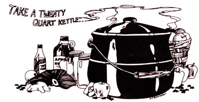

Nothing says "holiday" like mince pies...especially if you make the filling yourself. Here, Ruth Hampton tells you how to stage one of those satisfying annual cooking orgies for which a good, old-fashioned country kitchen was just naturally designed.
Do you like to serve your family winter desserts packed with protein, iron and vitamins? Did your good organic gardening result in gleaming glasses of wholesome jellies, mounds of firm, crisp apples and gallons of cider? Does your cellar hold home-dried raisins and jars of watermelon preserves, dried or preserved peaches, pears, cherries or orange peel? Well, today's the day...a mincemeat day!
No, I don't mean that stale, medicinal-tasting mixture from the supermarket...I'm talking about luscious, juicy, home-grown mincemeat that will make moist cakes, rich cookies and delectable pies all through the cold, stay-in-and-bake days of winter.
One requirement for a mincemeat day is a nip in the air and lots of dry leaves in varying shades of red, gold and brown. With them should be wind-not a Christmas-loaded-with-snow wind but a frisky, cold, leaf-dancing wind-and overhead, gray skies. A little rain won't hurt, though it isn't absolutely necessary...but gray, definitely: dull gray and windy, with apples.
That's the second "must": The apples have to be in-in from the orchard, in from the garage, in from the cellar-fragrant, tart and firm. A health-packed harvest.
At our house there also has to be at least one fat venison neck. Other cuts may be used in order to have enough meat to mince, but the neck is the favored part. I understand people in other areas of the country make mincemeat out of good homegrown lamb or beef, but-having always lived in the south-eastern Oregon mountains-I haven't tried this. You can probably adapt a windy, leafy, gray day to any kind of makings you have, but if your family hunts...fresh venison.
Then there must be jars, lots of them, hot and gleaming. The book says that half an hour in a dishwasher easily equals half an hour in Grandma's copper boiler when it comes to sterilizing glasses, so if you have buttons, push them. If not-and if you've misplaced that caldron of Grandma's-try boiling the containers in a large roasting pan and storing them in a warm oven until the mincemeat is done.
Jars, meat, apples and the right day: these are the basics. Start early and, while the salted meat is boiling in a big kettle, peel all those firm ruddy apples.The clamp-on peeler I ordered from a catalog last year works and looks very much like the old-timer I used to borrow from my pioneer-family neighbors. With this gadget I can easily do all my fruit while the venison is cooking to just tender.
As the apples are pared and cut, put them in ice-cold salted water and hold them until the meat is chopped (or ground, but not too fine...you should have about five quarts). Then chop the apples, or grind them coarsely-you'll need about ten quarts of minced fruit-and combine the two ingredients in the kettle along with the deer-or-whatever broth. (Don't forget: Into the compost heap with all those peelings!)
The rest is fancy work, and highly individual. My mother's letter, sent to me years ago in lieu of a formal recipe, says, "Add two or three pounds of brown sugar, one full cup of wine vinegar (or something...my mom is a good teetotaler) and maybe two pounds of seedless raisins, dried currants, dried mixed fruits. (One pound of each is fine, and omit anything you don't like.)
"Also add a glass of watermelon preserves (if you've never heard of 'em, inquire of someone over forty, or use more mixed fruit), a glass of dark jelly, half a pound of ground suet (you know, the beef fat that people put in bird feeders), about half a gallon of apple cider and some cinnamon, nutmeg, cloves and vanilla. (Start with one teaspoon each, and don't get carried away until you've cooked and tasted the stuff.) Simmer everything over low heat for several hours, stirring and tasting until the mixture is dark and syrupy. Ladle it into hot jars and seal them."
That's all there is to it...except for those long happy hours in a warm, fragrant kitchen...stirring, reading a little, tasting and admiring the gray, blustery day outside. You know, a mincemeat day.
|
|
 |
|